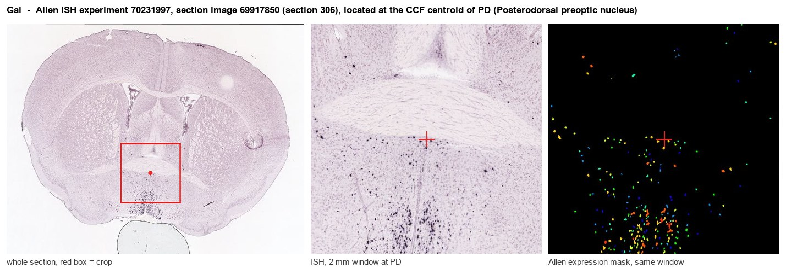
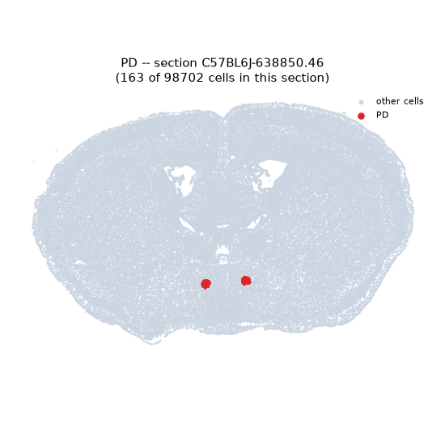
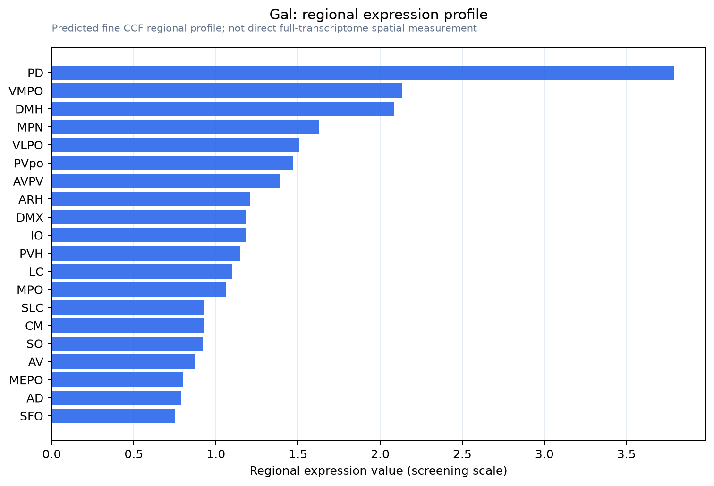

Gal
Galanin peptides [Cleaved into: Galanin; Galanin message-associated peptide (GMAP)]
Spatial tier: RESTRICTED · Class: GPCR · Top region: PD (Posterodorsal preoptic nucleus) · Positive regions: 17/554
46.7Discovery Score
42.8Targetability Score
CEvidence grade C
What this means: Gal: fine CCF profile is restricted toward PD (top regions: PD, VMPO, DMH, MPN, VLPO; 17 positive regions); direct spatial validation is still required.
Function in PD: evidence, prediction, innovation
- Gene function
- Gal encodes galanin, a 29/30-amino-acid neuropeptide packaged in dense-core vesicles and co-released with GABA or glutamate. It acts on three Gi/Go-coupled receptors (GalR1-3), lowering cAMP and opening GIRK channels, so its net effect is inhibitory and neuromodulatory rather than fast synaptic. Galanin marks several functionally distinct preoptic and hypothalamic populations.
- Region function
- The posterodorsal preoptic nucleus (PD) is a small sexually dimorphic node of the posterior preoptic area that receives medial amygdala input and is activated by ejaculation; lesions disrupt male copulatory behaviour.
- Published in this region
- expression only No region-specific literature found. The closest findings are that galanin is among the most abundant neuropeptide transcripts across preoptic cell types in the MERFISH atlas of Moffitt et al. 2018, that MPOA galanin neurons govern parenting and male mating (Wu et al. 2014), and that PD itself is an ejaculation-activated, mating-required nucleus in male gerbils (Heeb and Yahr 2000; Simmons and Yahr 2002) - but no study has examined galanin within PD.
- Predicted function
- Prediction: PD galanin neurons are most plausibly a copulation-activated subset of the preoptic galanin continuum that Wu et al. showed controls mating and parenting, with galanin acting as a slow GalR1-mediated brake gating sexual satiety and the post-ejaculatory refractory state. Ablating or chemogenetically silencing PD Gal neurons should prolong or disorganise mounting and shorten the post-ejaculatory interval, whereas activation should suppress mounting and inter-male aggression. Intra-PD galanin or M617 should be inhibitory; the GalR antagonist M40 should block it.
- Innovation
- ★★★★☆ 4/5 Preoptic galanin is heavily studied in MPOA and VLPO, but no work isolates the PD subnucleus despite its established role in ejaculation.
- Tools
- Gal-Cre BAC driver lines (GENSAT; the Gal-cre line used by Wu et al. 2014), Gal-IRES-Cre and Gal-cre knock-in lines; galanin antisera; GalR1 agonist M617; GalR antagonists M40/galantide and M35; Cre-dependent caspase/DTA ablation and hM3Dq/hM4Di AAVs.
- References
Direct evidence located at the region

Allen ISH experiment 70231997, section image 69917850 (section 306): the section that contains the CCF centroid of Posterodorsal preoptic nucleus according to the Allen image-to-atlas alignment (reference_to_image), with a 2 mm window around that point. Left: whole section, red box = window. Middle: ISH signal. Right: Allen's expression-mask view of the same window. open this image in the Allen viewer
Look it up yourself: Allen Mouse Brain ISH for GalAllen reference atlas: PD (structure 914)ABC Atlas MERFISH viewer(in the ABC Atlas choose dataset MERFISH-C57BL6J-638850-CCF, colour cells by gene "Gal" or by parcellation_substructure "PD")All genes confined to PD + 3-D brain
Direct spatial evidence
MERFISH REGION LOCATOR

Regional expression figure

Predicted WMB × fine-CCF profile; not direct full-transcriptome spatial measurement.
Spatial profile
Evidence and specificity
- Evidence status
- PREDICTED_FINE
- Direct sources
- None; predicted localization only
- Exclusive threshold
- 12 positive regions out of 554
- Spatial specificity
- 0.348
- Top-region fraction
- 0.087
- Filter status
- PASS
Interpretation limits
- Cell-type-to-region projection is imputed expression, not direct spatial measurement.
- Adult reference atlases do not establish stability across age, sex, strain, state, or disease.
- Transcript abundance does not guarantee protein abundance or genetic-tool performance.